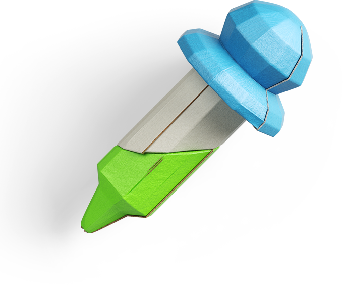

Popular
Paper Eyedropper
Finally, another approach often cited in debates of scientific skepticism against controversial movements like "scientific creationism", is methodological naturalism. Its main point is that a difference between natural and supernatural explanations should be made, and that science should be restricted methodologically to natural explanations.
Quantity
Color
10999